Minicurso Git/GitHub

Diogo Gonçalves
diogomachadogoncalves@gmail.com

Licença
Esta apresentação está licenciada com uma Licença Creative Commons - Atribuição 4.0 Internacional.
Podem estar disponíveis autorizações adicionais às concedidas no âmbito desta licença em github.com/UTFPR-PG/minicursos.
História
Motivação
Linus Torvalds estava insatisfeito com o BitKeeper, ferramenta de controle de versão que ele utilizava para desenvolver o kernel do Linux.
Após estudar as outras opções ...
“The end result was I decided I can write something better than anything out there in two weeks, and I was right.”
Motivação
Atualmente o desenvolvimento do kernel Linux é auxiliado exclusivamente pelo Git.
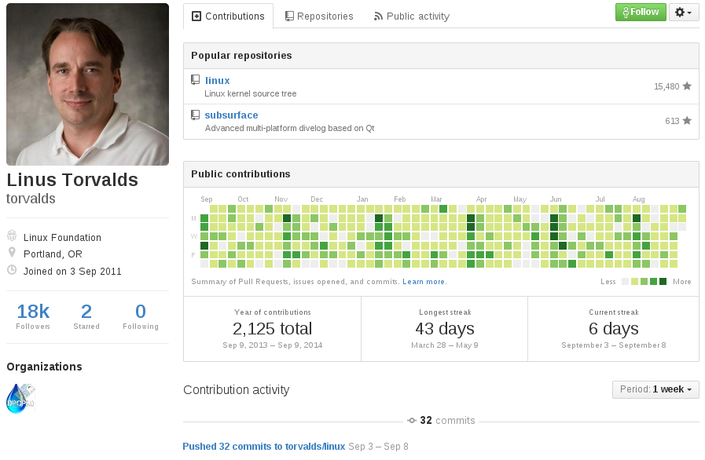Mas por que eu usaria um controle de versão?
Organizar o desenvolvimento de software
Gerenciar manualmente as versões do seu software não será mais necessário, o Git gerencia de uma forma mais organizada e eficiente para você.
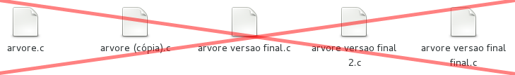Organizar o desenvolvimento de software
O Git oferece controle total do projeto ao desenvolvedor para, entre outras coisas:
- Visualizar as mudanças ocorridas em cada arquivo;
- Visualizar o estado do projeto em etapas anteriores;
- Desfazer mudanças;
- Desenvolver funcionalidades em paralelo.
Compartilhar projetos
Desenvolver projetos colaborativos nem sempre é fácil. Utilizar DropBox, pen drives ou afins para compartilhar código muitas vezes resulta em dor de cabeça.

Compartilhar projetos
Estas ferramentas foram projetadas para fins genéricos, não oferecendo aspectos importantes para uma equipe de desenvolvimento, como histórico de ações de cada colaborador, consistência entre as versões dos integrantes e fácil identificação e correção de bugs.
Mais uma vez o Git cuida disso para você.
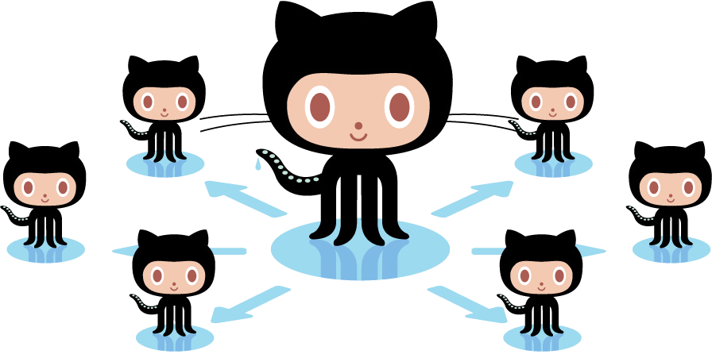Independe da plataforma
O mercado utiliza!
Desenvolvimento profissional é feito assim :)
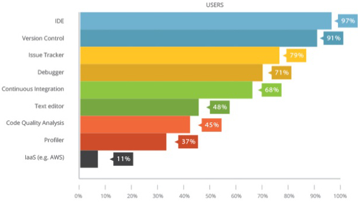O mercado utiliza!
E o Git está entre os mais populares.
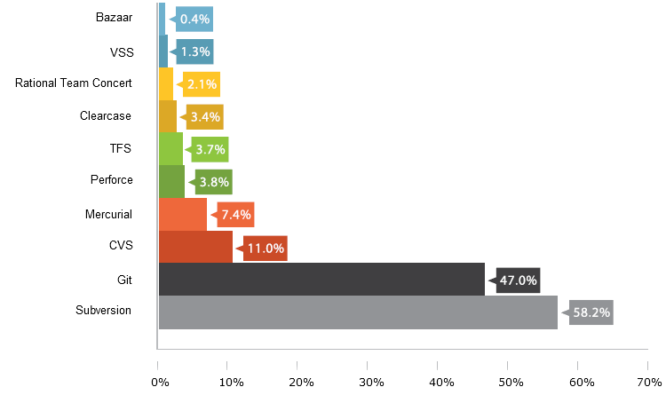Quem usa Git?
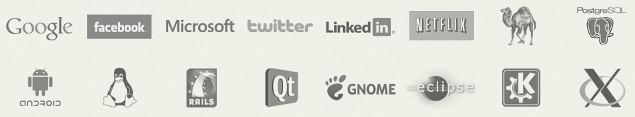Vagas de emprego
Como o Git funciona?
Armazenamento
Baseado em Snapshots e não em lista de alterações
SCV convencionais
Git
SCV Distribuído
No Git, todos os clientes possuem uma cópia completa do repositório remoto.
Centralizado
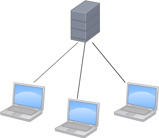Distribuído
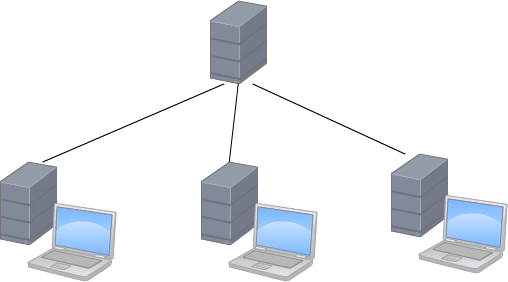Imagens: Borja Gorriz Hernando
Fluxo de trabalho

Antes de começarmos ...
Instale o Git
Cadastre-se no GitHub
Vamos à prática!

Consultas rápidas
Caso não se lembre de algum comando no decorrer do minicurso ou queira uma explicação mais detalhada ...
git help
ou
man git
Configurando o ambiente
Identificação
git config --global user.name "Nome"
git config --global user.email email
Editor
git config --global core.editor editor
Verificar configurações atuais
git config --list
Trabalhando localmente
Iniciando um projeto
Para iniciar um repositório Git.
git init
Este comando cria toda a estrutura que o Git necessita para funcionar. Os arquivos são criador na pasta oculta .git/
A partir de agora você pode desenvolver seu projeto sob controle do Git
Verificando o estado do projeto
git status
O git status exibe as alterações ocorridas no repositório desde o último commit.
Adicionando arquivos
git add arquivo
git add .
git add diretório
O git add adiciona ou atualiza um arquivo da staging area.
Ou seja, o comando informa ao Git para rastrear o referido arquivo. Caso o arquivo já esteja sob controle do Git, ele o atualiza.
Confirmando mudanças
git commit
git commit -m "descrição do commit"
git commit -am "descrição do commit"
git commit transfere o estado do projeto salvo na staging area para o repositório do projeto.
Simplificando, ele confirma as suas modificações, criando um novo estado ou "ponto de referência" para o seu projeto. Todo commit é associado à um checksum para poder ser referenciado posteriormente.
Todo commit deve possuir uma mensagem de identificação, usada para descrever as alterações do commit. Favor, use-a para tal fim.
Exemplo de como não se fazer um commit. Escreva mensagens intuitívas.
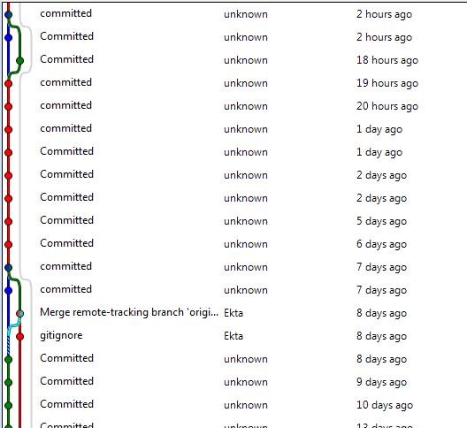Fonte: algum lugar na interwebs.
Comparando alterações
O git status informa "quem" foi alterado, mas e se eu quiser saber exatamente "o que" foi alterado?
git diff
git diff arquivo
git diff id_commit
git diff id_commit id_commit
O comando git diff compara o estado do repositório atualmente com o estado salvo na staging area
git diff --cached
O comando git diff --cached compara o estado do repositório salvo na staging area com o estado do último commit
Pode-se também comparar as diferenças entre dois commits
histórico de alterações
O comando git log exibe o histórico de commits do projeto
git log
git log --oneline
git log -p
git log --graph

'Passeando' pelo projeto
A partir do código associado aos commits você pode voltar para um determinado 'estado' do projeto
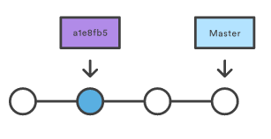git checkout id_commit
O comando git checkout também redireciona arquivos e branches
Desfazendo modificações
Se eu me arrepender das minhas últimas alterações
Você pode descartar mudanças no seu working directory voltando o estado dos seus arquivos para o último salvo na staging area.
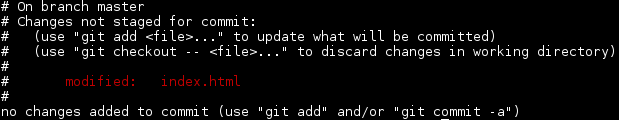git checkout arquivo
git checkout .
Desfazendo modificações
E se eu já adicionei as alterações na staging area??
O comando git reset HEAD devolve as modificações da staging area para o working directory.
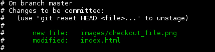 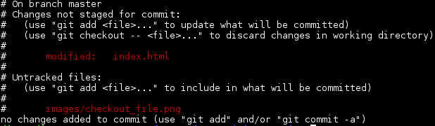git reset HEAD arquivo
git reset HEAD .
Desfazendo modificações
E se eu já commitei minhas alterações??
Há duas maneiras diferentes de se fazer isto, você irá escolher uma ou outra dependendo do resultado que você espera
Desfazendo modificações
O comando git reset faz o projeto/arquivo voltar para um estado anterior.
git reset id_commit
git reset arquivo
git reset --hard id_commit
Desfazendo Revertendo modificações
O comando git revert não desfaz um commit, mas cria outro removendo a alteração anterior.
git revert id_commit
Removendo arquivos
O comando git rm remove um arquivo do seu projeto.
git rm arquivo
git rm --cached arquivo
A opção --cached remove o arquivo apenas do Git, sem esta opção o comando remove o arquivo do seu computador também.
Ignorando arquivos
Deixar todos os arquivos contidos na pasta do projeto sob controle do Git pode acabar dificultando o gerenciamento, e muitas vezes simplesmente não achamos necessário rastrear alterações de alguns arquivos (arquivos temporários, executáveis e etc...).
.gitignore
O arquivo oculto .gitignore é o responsável por dizer ao Git quais arquivos ele pode ignorar.
Ignorando arquivos
Basta adicionar uma pattern que o Git usará para ignorar os arquivos. Todos os arquivos que 'casarem' com as patterns serão ignorados. As patterns seguem o padrão utilizado nos sistemas unix/Linux.
Exemplos de patterns e extensões podem ser geradas em gitignore.io#comentario
* qualquer caractere
! negação
/** subdiretório
Ramificando a produção de software
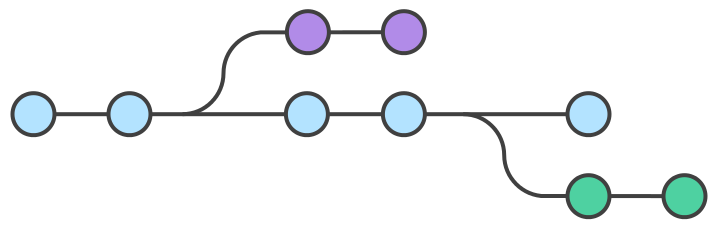Ramificando a produção de software
O Git permite criar uma linha independente de desenvolvimento no seu projeto. Isto permite alterações em partes especificas do software sem comprometer o restante do projeto.
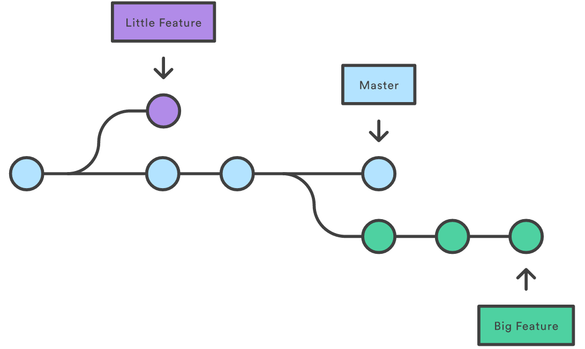Ramificando a produção de software
O comando git branch cria um novo branch a partir do último commit.
git branch nome_branch

Navegando entre branches
Além de visualizar commits antigos, o git checkout também é o responsável por alterar o branch corrente.
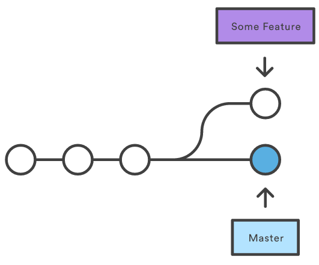 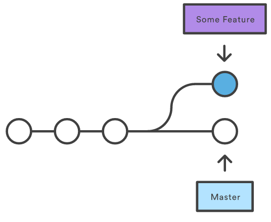git checkout nome_branch
Unindo ramificações
Após desenvolvedor uma funcionalidade separada do fluxo principal, muitas vezes é interessante incorporar as modificações no branch master. O comando git merge uni dois branches novamente, combinando as funcionalidades do branch independente com o branch atual.
git merge nome_branch
Unindo ramificações
Quando não há commits posteriores à criação do branch, a incorporação das funcionalidades ocorre sem nenhum problema.
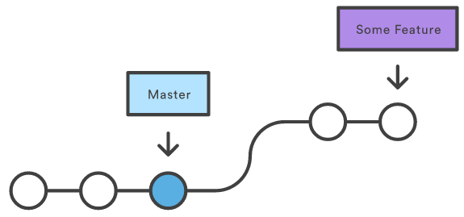 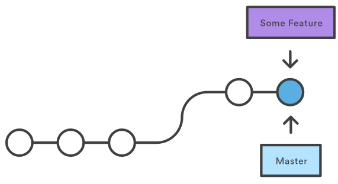Unindo ramificações
Porém, quando os branches divergem, o Git precisa que combinar seus conteúdos.
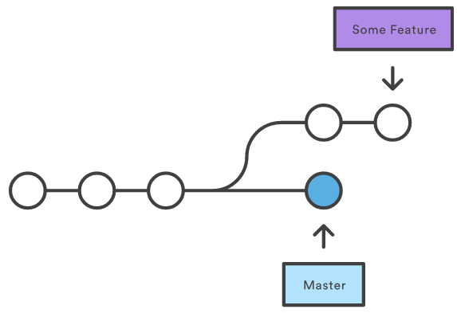 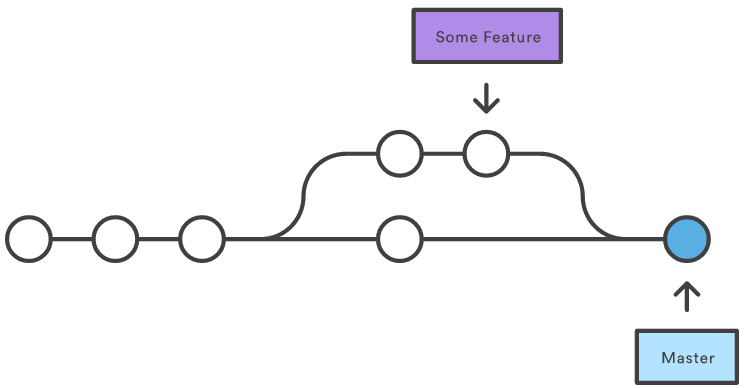Unindo ramificações
Algumas vezes o Git pode não saber que modificações escolher quando dois branches alteram o mesmo trecho de código.
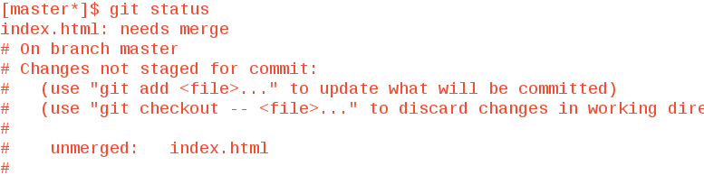Unindo ramificações
Para informar o trecho conflitante, o Git sinaliza as linhas do arquivo com algumas marcações(<<<<<<<, ======= e >>>>>>>), para corrigir o conflito e confirmar o merge, basta apagar as linhas desnecessárias do arquivo, mantendo conteúdo escolhido, e efetuar um novo commit. Este é basicamente o único trabalho manual que o Git necessita
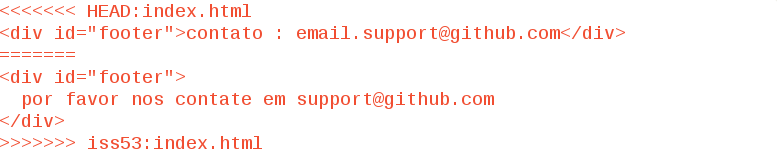Fonte: git-scm/book
Deletando ramificações
Após incorporar um branch à outro, pode não ser mais necessário manter uma ramificação. Para deletar um branch utiliza-se do parâmetro -d juntamente com o comando git branch
git branch -d nome_branch
Trabalhando com repositórios remotos
Trabalhando com repositórios remotos
Muitas vezes(para não dizer na maioria) não desenvolvemos projetos sozinhos. Uma forma de facilitar o compartilhamento de projetos é disponibiliza-lo em um local de fácil acesso entre os integrantes da equipe, além de permitir que o repositório possua sempre a versão mais atualizada dentre os integrantes.
Trabalhando com repositórios remotos
Muitas empresas possuem servidores dedicados para suas equipes, mas há algumas soluções no mercados que cumprem a mesma função.
Trabalhando com repositórios remotos
Mas daremos foco ao case mais bem sucedido.

Referenciando um repositório remoto
O comando git remote add é o responsável por referenciar um repositório remoto em um repositório local já existente
git remote add origin URL
O comando git remote rm é utilizado para apagar uma referência à um repositório remoto. Util quando se deseja substituir o local onde o remoto está hospedado.
git remote rm origin
Copiando um repositório remoto
Quando se deseja iniciar/continuar um projeto já existente, utiliza-se do git clone para copiar todo um repositório remoto para uma máquina local.
git clone URL
Enviando conteúdo para o remoto
Utiliza-se o git push para enviar as modificações para o repositório remoto.
git push
git push origin master
git push origin nome_branch
Baixando atualizações do remoto
O Git disponibiliza duas maneiras de baixar as atualizações de um repositório remoto. O comando git fetch baixa as atualizações mas não as incorpora ao repositório local.
git fetch
git fetch origin master
git fetch origin nome_branch
Baixando atualizações do remoto
Outra maneira é utilizando o comando git pull, que baixa e incorpora as modificações no repositório local. Equivale à um git fetch seguido de uma git merge.
git pull
git pull origin master
git pull origin nome_branch
Criando versões
Conforme incluímos funcionalidades no sistema, podemos definir pontos relevantes no software, que geralmente, marcam uma versão de lançamento.
O comando git tag inclui um rótulo à um determinado commit para que este possa ser referenciado mais facilmente.
git tag -a versao -m "descrição"
Criando versões
Para visualizar as versões ja criadas, utilize o comando git tag sem parâmetros.
git tag
Criando versões
Para visualizar o conteúdo de uma versão lançada, utilize o comando git checkout.
git checkout nome_tag
Criando versões
Para enviar os rótulos criados para o repositório remoto, utilize o parâmetro --tags no comando git push.
git push origin --tags